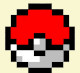
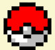

Olá! Eu sou o Vinícius Ferraz.
Estudante de analize e desenvolvimento de sistemas.
Amante da tecnologia, música e xadrez.
Essa página tem como objetivo mostrar os projetos que já fiz e também os que pretendo fazer no futuro próximo. Além de contar um pouco sobre o que tenho estudado e meus hobbies.
Sobre

Meu nome é Vinícius Ferraz tenho 23 anos de idade e atualmente estudo analise e desenvolvimento de sistemas. A alguns anos me interesso por programação, mas no início eu só encarava como um hobby. Com o passar do tempo, principalmente durante o tempo de quarentena em 2020 eu comecei a estudar mais e a ver que essa poderia ser minha vocação profissional.
Foi então que comecei a levar mais a sério os estudos, fiz um curso de HTML e CSS, e também Javascript. Tudo de forma online e grátis. Quando comecei a ver o resultado do meu esforço foi que me senti motivado a iniciar o curso de analise e desenvolvimento de sistemas e me profissionalizar.
Atualmente estou finalizando o primeiro período do curso e estou em busca do meu primeiro estágio.
Projetos
Já realizados


 

futuros

Hobbies
Música
Sempre gostei muito de música, esse interesse aumentou ainda mais quando eu comecei aprender a tocar violão.
Eu tinha uns 14 anos quando resolvi pegar o violão velho que tinhamos aqui em casa. Vi muitos vídeos no youtube até que depois de muito esforço aprendi algumas músicas. Hoje em dia consigo tocar de forma razoável, inclusive dou algumas aulas para complementar minha renda e ajudar a pagar meu curso de ADS.
Atualmente tenho mais de 10 instrumentos, sendo que a maioria é a minha irmã que sabe tocar, eu arranho mais é o violão e o cavaquinho.
Xadrez
Desde criança sei jogar xadrez, meu pai me ensinou o movimento das peças e eu sempre joguei com ele e meu irmão mais velho. Estou longe de ser considerado bom no jogo, mas me arrisco a jogar de vez em quando. Faço uso de duas plataformas de jogo online e grátis Lichess.org e também Chess.com. Clicando nesses links você terá acesso ao meu perfil (VN_rraz) nas plataformas, se quiser uma partida é só chamar.
Esportes
Como a maioria dos brasileiros sou um amante dos esportes, acompanho o futebol nacional e internacional. Recentemente criei gosto também pelo basquete, e futebol americano, ligas como a NBA e NFL prendem a minha atenção. Mas se eu estiver com tempo sobrando eu assisto a qualquer esporte, do tênis ao levantamento de peso.